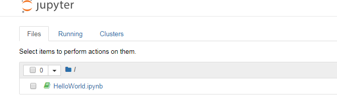

一、Jupyter安装
前提需要已经安装好python环境~
接着，Python3x版本安装路径下执行pip命令安装
pip3 install Jupyter
看网速，安装完后会显示安装成功一段话即可。
二、启动jupyter notebook两种方法
1：命令行窗口输入jupyter notebook ,浏览器自动打开jupyter notebook
2：找到安装路径（例如：我是D:\Python36\Scripts ）下的jupyter-notebook.exe文件双击直接运行，此时工作路径就是.exe文件所在的目录。
三、修改jupyter notebook默认文件路径
1：D盘自行新建一个文件（例如：我是D:\JupyterWork）
2：安装路径下，找到jupyter-notebook.exe文件，右键设为快捷方式，再右键点击属性，将起始位置改为自己所设的文件地址
3：之后运行这个快捷方式，打开页面如下：
顶端，有三个不同的标签：
● Files（文件），该标签内显示当前工作路径下的文件
● Running（运行），该标签内显示当前正在后台运行的 Notebook 文件
● Clusters（集群），这个暂时未用到，不知:
4：创建一个新的 Notebook 文件，点击右侧的 New按钮，选择 Python 3 ，新建一个可运行 Python 3 代码的 Notebook 文件
输入语句print（“hello，world”），按ctrl+enter,执行，自动打印输出结果。
5：顶部对文件进行重命名为helloworld，files标签下便显示出这个文件，文件名以.ipynb格式

6：此时看到原来设置的D盘文件路径下已经存在新建的helloworld文件
7：Jupyter写数据分析相关的内容，要导入三个库
Numpy: pip3 install numpy
Matplotlib: pip3 install matplotlib
Pandas: pip3 install pandas
------------end-------------
其他内容待后续学习再更新。。。。。
ps：
1：pip安装方式似乎不需要修改jupyter_notebook_config.py下面的配置？？？
2：那个修改jupyter notebook默认文件路径，若是用Anaconda安装的，快捷键那边，有个目标地址，后面有一个%USERPROFILE%
将%USERPROFILE%改成你要的路径就可以了？？？没试过，可以自行试试~